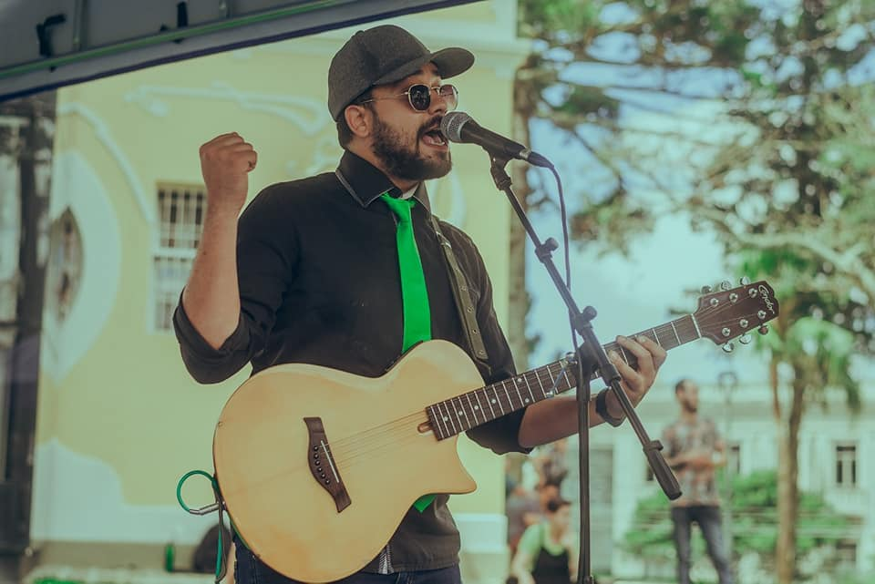
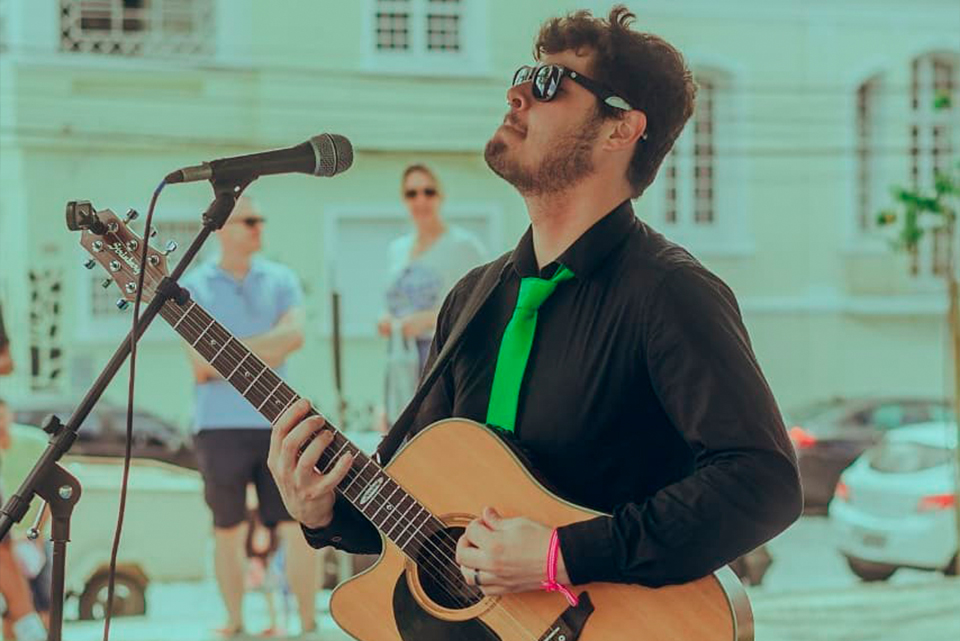

Quem Somos
Carlos Félix
Músico, produtor, empresário e desenvolvedor. Fotógrafo de formação, sempre esteve envolvido no meio artistico e audiovisual. Hoje produz materiais e artistas na busca pela dignidade e qualidade de vida de outros agentes culturais por meio do fomento da cultura.
Wilney Dovhepoly

Músico, professor e produtor. Formando em produção músical pela Universidade Federal do Paraná, e professor de língua inglesa, é o responsavel pelas instruções de inglês para músicos, além de trabalhar ativamente na parte de produção musical e audiovisual dos nossos artistas parceiros.